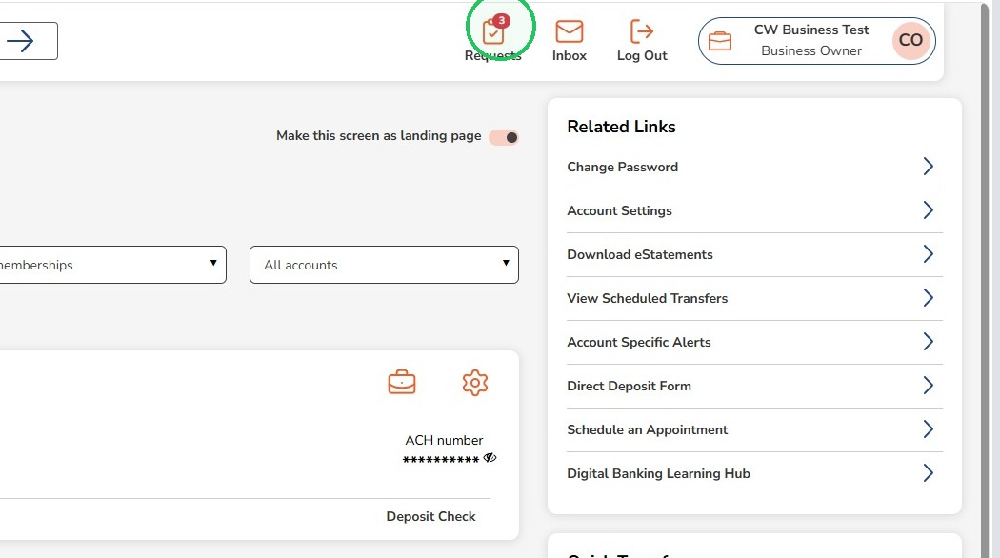
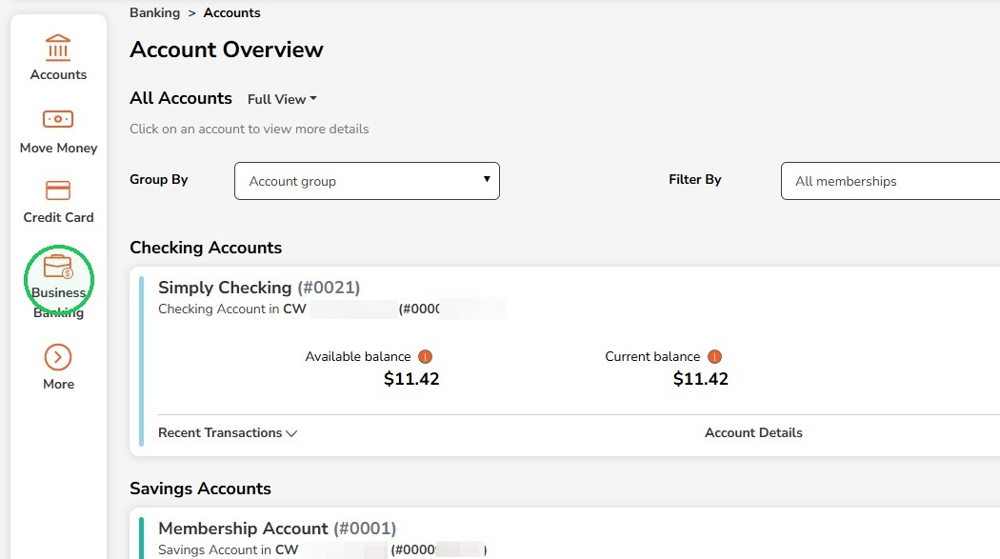
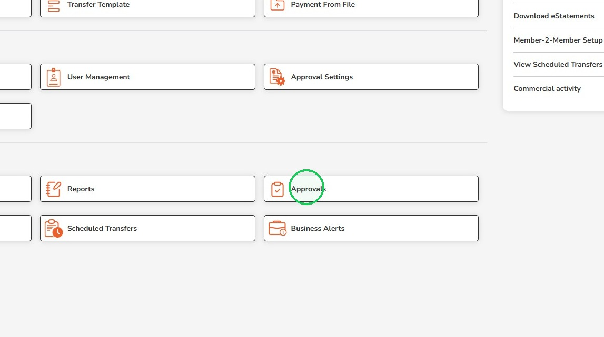
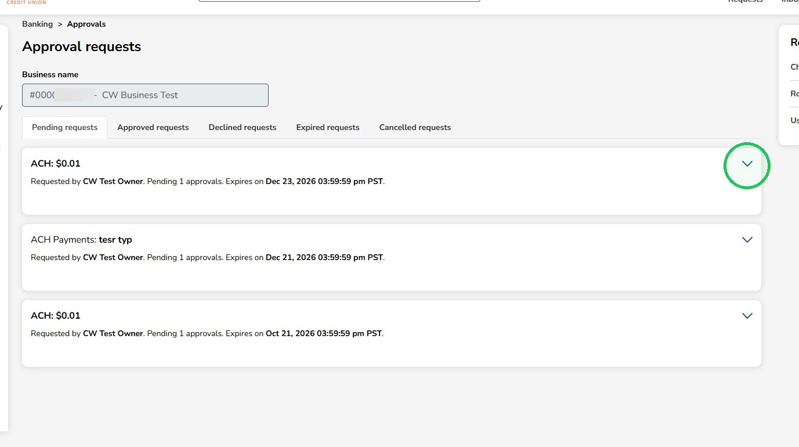
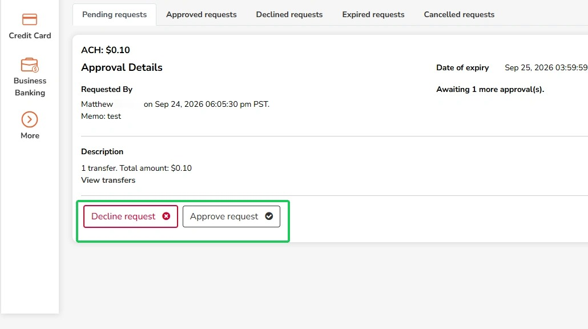
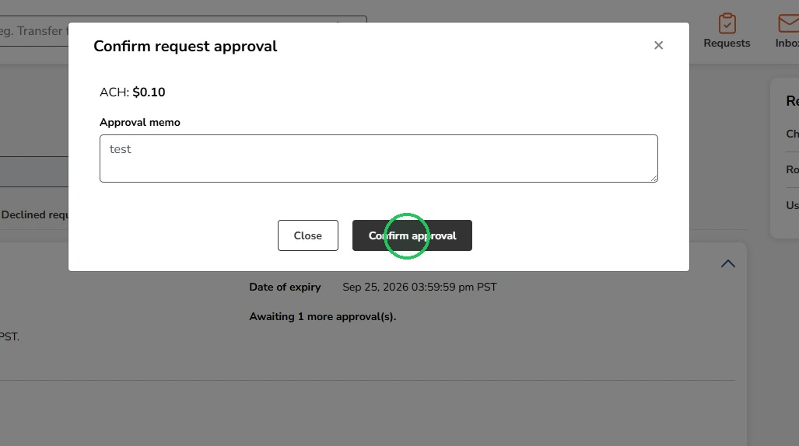
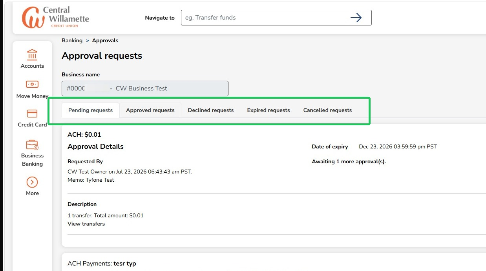

View ACH Transfer Requests for Approval
This guide helps you easily locate requests and see approved, declined, expired, and cancelled transactions within your business banking dashboard.
1
Click "Requests"

2
Another way to view requests is through the Business Banking page

3
Click "Approvals"

4
To open a pending request, click the arrow

5
Review the request details then click Decline or Approve

6
This box lets you add an Approval memo

A One-Time Passcode will be required before the final approval is confirmed
7
Additional tabs will let you view Approved, Declined, Expired or Cancelled requests
